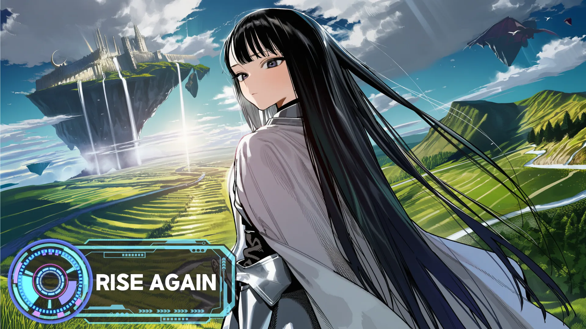

SOUNDTRACK · 20
Space 재생 ←→ 곡

01/ 20테마
RISE AGAIN
Rise Again x Rise Again (Mashup)
0:002:22
테마1
지역10
장면6
현실3
RISE AGAINRise Again x Rise Again (Mashup)
SOUNDTRACK · 20
Space 재생 ←→ 곡

01/ 20테마
Rise Again x Rise Again (Mashup)